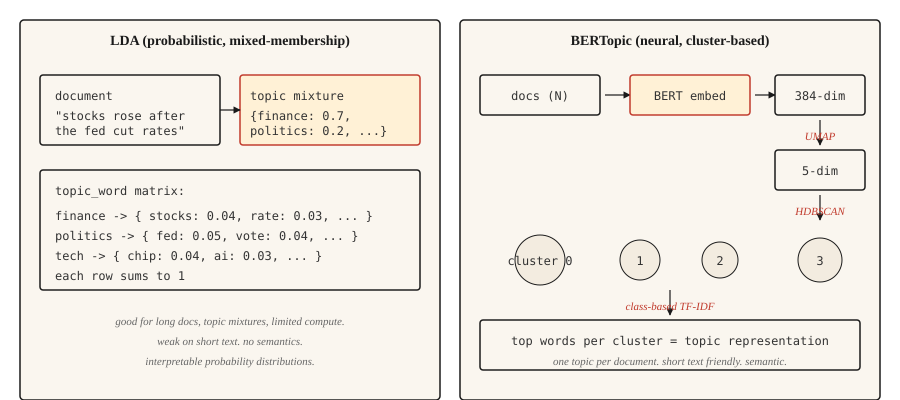

Home / NLP, Foundations to Advanced
Topic Modeling — LDA and BERTopic
LDA: documents are mixtures of topics, topics are distributions over words. BERTopic: documents cluster in embedding space, clusters are topics. Same goal, different decompositions.
- Type
- Learn
- Languages
- Python
- Prerequisites
- Phase 5 · 02 (BoW + TF-IDF), Phase 5 · 03 (Word2Vec)
- Time
- ~45 minutes
#The Problem
You have 10,000 customer support tickets, 50,000 news articles, or 200,000 tweets. You need to know what the collection is about without reading it. You do not have labeled categories. You do not even know how many categories exist.
Topic modeling answers that without supervision. Give it a corpus, get back a small set of coherent topics and, for each document, a distribution over those topics.
Two algorithmic families dominate. LDA (2003) treats each document as a mixture of latent topics and each topic as a distribution over words. Inference is Bayesian. It still ships in production where you need mixed-membership topic assignments and explainable word-level probability distributions.
BERTopic (2020) encodes documents with BERT, reduces dimensionality with UMAP, clusters with HDBSCAN, and extracts topic words via class-based TF-IDF. It wins on short text, social media, and anything where semantic similarity matters more than word overlap. One document gets one topic, which is a limitation for long-form content.
This lesson builds intuition for both and names which one to pick for a given corpus.
#The Concept

LDA generative story. Each topic is a distribution over words. Each document is a mixture of topics. To generate a word in a document, sample a topic from the document's mixture, then sample a word from that topic's distribution. Inference reverses this: given observed words, infer the topic distribution per document and the word distribution per topic. Collapsed Gibbs sampling or variational Bayes does the math.
Key LDA output:
doc_topic: matrix(n_docs, n_topics), each row sums to 1 (document's topic mixture).topic_word: matrix(n_topics, vocab_size), each row sums to 1 (topic's word distribution).
BERTopic pipeline.
- Encode each document with a sentence transformer (e.g.,
all-MiniLM-L6-v2). 384-dim vectors. - Reduce dimensionality with UMAP to ~5 dimensions. BERT embeddings are too high-dim for clustering.
- Cluster with HDBSCAN. Density-based, produces variable-size clusters and an "outlier" label.
- For each cluster, compute class-based TF-IDF over the cluster's documents to extract top words.
Output is one topic per document (plus a -1 outlier label). Optionally, a soft membership via HDBSCAN's probability vector.
#Build It
#Step 1: LDA via scikit-learn
from sklearn.feature_extraction.text import CountVectorizer
from sklearn.decomposition import LatentDirichletAllocation
import numpy as np
def fit_lda(documents, n_topics=5, max_features=1000):
cv = CountVectorizer(
max_features=max_features,
stop_words="english",
min_df=2,
max_df=0.9,
)
X = cv.fit_transform(documents)
lda = LatentDirichletAllocation(
n_components=n_topics,
random_state=42,
max_iter=50,
learning_method="online",
)
doc_topic = lda.fit_transform(X)
feature_names = cv.get_feature_names_out()
return lda, cv, doc_topic, feature_names
def print_top_words(lda, feature_names, n_top=10):
for idx, topic in enumerate(lda.components_):
top_idx = np.argsort(-topic)[:n_top]
words = [feature_names[i] for i in top_idx]
print(f"topic {idx}: {' '.join(words)}")Notice: stopwords removed, min_df and max_df filter rare and ubiquitous terms, CountVectorizer (not TfidfVectorizer) because LDA expects raw counts.
#Step 2: BERTopic (production)
from bertopic import BERTopic
topic_model = BERTopic(
embedding_model="sentence-transformers/all-MiniLM-L6-v2",
min_topic_size=15,
verbose=True,
)
topics, probs = topic_model.fit_transform(documents)
info = topic_model.get_topic_info()
print(info.head(20))
valid_topics = info[info["Topic"] != -1]["Topic"].tolist()
for topic_id in valid_topics[:5]:
print(f"topic {topic_id}: {topic_model.get_topic(topic_id)[:10]}")The filter on Topic != -1 drops BERTopic's outlier bucket (documents HDBSCAN could not cluster). min_topic_size controls HDBSCAN's minimum cluster size; BERTopic's library default is 10. This example sets it to 15 explicitly for the lesson's scale. For corpora over 10,000 documents, increase to 50 or 100.
#Step 3: evaluation
Both methods output topic words. The question is whether those words cohere.
- Topic coherence (c_v). Combines NPMI (normalized pointwise mutual information) of top-word pairs over sliding-window contexts, aggregates the scores into topic vectors, and compares those vectors via cosine similarity. Higher is better. Use
gensim.models.CoherenceModelwithcoherence="c_v". - Topic diversity. Fraction of unique words across all topics' top words. Higher is better (topics do not overlap).
- Qualitative inspection. Read the top words of each topic. Do they name a real thing? Human judgment is still the last line of defense.
#When to pick which
| Situation | Pick |
|---|---|
| Short text (tweets, reviews, headlines) | BERTopic |
| Long documents with topic mixtures | LDA |
| No GPU / limited compute | LDA or NMF |
| Need document-level multi-topic distributions | LDA |
| LLM integration for topic labeling | BERTopic (direct support) |
| Resource-constrained edge deployment | LDA |
| Max semantic coherence | BERTopic |
The biggest practical consideration is document length. BERT embeddings truncate; LDA counts work on whatever length. For documents longer than the embedding model's context, either chunk + aggregate or use LDA.
#Use It
The 2026 stack:
- BERTopic. Default for short text and anything where semantics matter.
gensim.models.LdaModel. Classic LDA for production, mature, battle-tested.sklearn.decomposition.LatentDirichletAllocation. Easy LDA for experiments.- NMF. Non-negative matrix factorization. Fast alternative to LDA, comparable quality on short text.
- Top2Vec. Similar design to BERTopic. Smaller community but good on some benchmarks.
- FASTopic. Newer, faster than BERTopic on very large corpora.
- LLM-based labeling. Run any clustering, then prompt a model to name each cluster.
#Ship It
Save as outputs/skill-topic-picker.md:
---
name: topic-picker
description: Pick LDA or BERTopic for a corpus. Specify library, knobs, evaluation.
version: 1.0.0
phase: 5
lesson: 15
tags: [nlp, topic-modeling]
---
Given a corpus description (document count, avg length, domain, language, compute budget), output:
1. Algorithm. LDA / NMF / BERTopic / Top2Vec / FASTopic. One-sentence reason.
2. Configuration. Number of topics: `recommended = max(5, round(sqrt(n_docs)))`, clamped to 200 for corpora under 40,000 docs; permit >200 only when the corpus is genuinely large (>40k) and note the increased compute cost. `min_df` / `max_df` filters and embedding model for neural approaches also belong here.
3. Evaluation. Topic coherence (c_v) via `gensim.models.CoherenceModel`, topic diversity, and a 20-sample human read.
4. Failure mode to probe. For LDA, "junk topics" absorbing stopwords and frequent terms. For BERTopic, the -1 outlier cluster swallowing ambiguous documents.
Refuse BERTopic on documents longer than the embedding model's context window without a chunking strategy. Refuse LDA on very short text (tweets, reviews under 10 tokens) as coherence collapses. Flag any n_topics choice below 5 as likely wrong; flag >200 on corpora under 40k docs as likely over-splitting.#Exercises
- Easy. Fit LDA with 5 topics on the 20 Newsgroups dataset. Print top 10 words per topic. Label each topic by hand. Did the algorithm find the real categories?
- Medium. Fit BERTopic on the same 20 Newsgroups subset. Compare the number of topics found, top words, and qualitative coherence against LDA. Which surfaces the real categories more cleanly?
- Hard. Compute c_v coherence for both LDA and BERTopic on your corpus. Run each with 5, 10, 20, 50 topics. Plot coherence vs topic count. Report which method is more stable across topic counts.
#Key Terms
| Term | What people say | What it actually means |
|---|---|---|
| Topic | A thing the corpus is about | A probability distribution over words (LDA) or a cluster of similar documents (BERTopic). |
| Mixed membership | Doc is multiple topics | LDA assigns each document a distribution over all topics. |
| UMAP | Dimensionality reduction | Manifold learning that preserves local structure; used in BERTopic. |
| HDBSCAN | Density clustering | Finds variable-size clusters; produces "noise" label (-1) for outliers. |
| c_v coherence | Topic quality metric | Average pointwise mutual information of top topic words within sliding windows. |
#Further Reading
- Blei, Ng, Jordan (2003). Latent Dirichlet Allocation — the LDA paper.
- Grootendorst (2022). BERTopic: Neural topic modeling with a class-based TF-IDF procedure — the BERTopic paper.
- Röder, Both, Hinneburg (2015). Exploring the Space of Topic Coherence Measures — the paper that introduced c_v and friends.
- BERTopic documentation — the production reference. Excellent examples.
Nice. That's 4 minutes of NLP, Foundations to Advanced behind you.
Continue to Text Generation Before Transformers — N-gram Language Models →